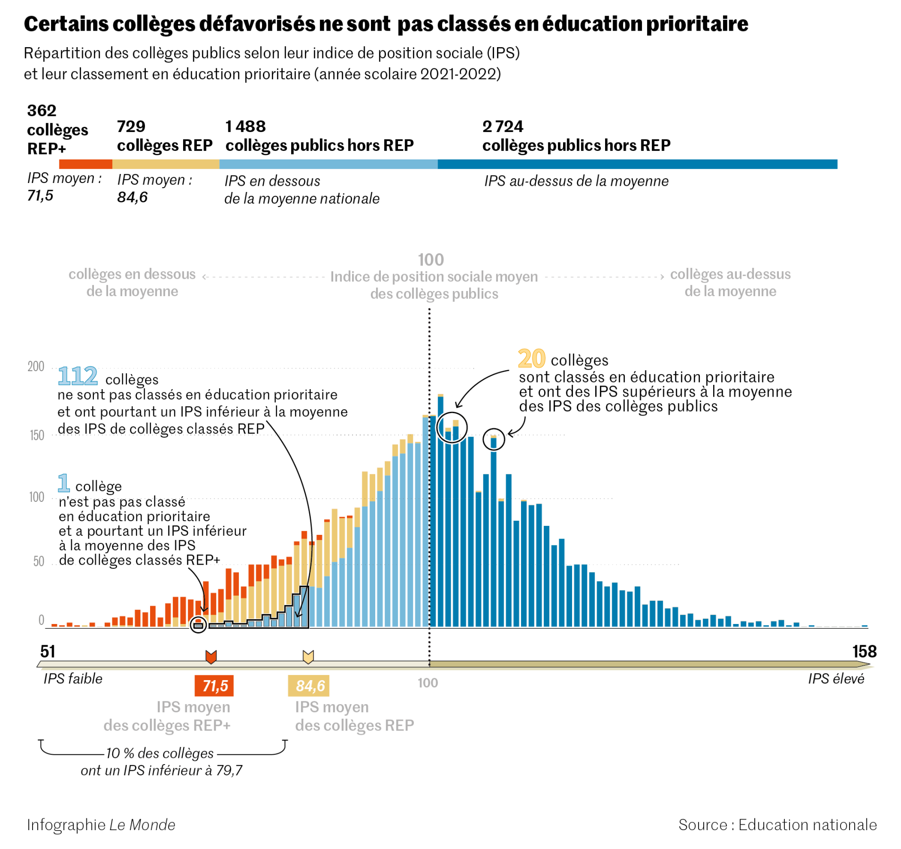

Est-ce que l’open data a rempli ses promesses ?
Qui suis-je ?

Co-fondateur de la coopérative Datactivist
Maître de conférences associé à Sciences Po Aix
Auteur du livre Les Données de la démocratie, C&F éditions, 2024
Co-fondateur et administrateur de MaDada.fr
Je ne m’attendais pas à ça…

Mais au fait, quelle était la promesse ?
Open data : à quoi vous attendiez vous ?

Les 3 grandes promesses initiales
Un ordre qui varie selon les priorités politiques du moment

La promesse d’une transformation en profondeur

« A l’horizon du siècle, l’Open Data apparaît comme un instrument puissant, aux mains des dirigeants et de la société civile, pour répondre aux grands défis notamment du réchauffement climatique, de la croissance durable, ou de la régulation du système financier international. »
Severin Naudet, Etalab, 2010
Transparence
Les “machines à scandales” (Parasie et Dagiral) : distribuer nos indignations collectives et décentraliser les centres de calcul
Les “auditeurs en pantoufle” (Cameron) : l’effet potentiellement dissuasif d’une vigie citoyenne

Innovation
Les promesses de croissance de l’économie des apps en pleine crise financière
Le “solutionnisme” démocratique (Morozov) : des applications pour résoudre les problèmes publics


Innovation
Des études macro-économiques excessives, des méthodes variables
Un potentiel de croissance surestimé : 0,4% et 7% du PIB mondial grâce à l’open data

Innovation
Des territoires attirés par la promesse de création d’emplois

Innovation
Une culture de la redevance encore persistante dans l’État

Ouverture et transformation
Le gouvernement ouvert : une mayonnaise qui n’a jamais vraiment pris en France

Ouverture et transformation
Un projet de transformation publique pas toujours assumé ou pensé comme tel

Des objectifs vastes traduits dans la loi
 …
…
“Le présent projet de loi vise à augmenter le volume de documents administratifs mis en ligne par les administrations dans le cadre de la politique d’open data, afin
d’accroître la transparence des autorités publiques
d’améliorer les services publics
et de stimuler le développement de nouvelles activités économiques
[…] Cette politique constitue un axe essentiel de la construction d’un gouvernement plus ouvert et plus efficace. […] C’est aussi un important levier de stimulation du dynamisme économique et de l’innovation.”
Un renouvellement de la transparence en demi-teinte
- Les fondements juridiques instables de la transparence administrative
- L’open data : un carburant pour les « machines à scandale » ?
- Des données « inoffensives » ?
- Faut-il produire ses propres données ?

Un exemple : les Indices de Position Sociale des établissements scolaires


Autre exemple : les notes de frais des maires

Lire à ce sujet : chicane-lemag.fr/16
Quelques exemples de services nés de l’open data

Quelques exemples de services nés de l’open data

Quelques exemples de services nés de l’open data

Quelques exemples de services nés de l’open data

Une transformation des administrations en cours
- Le mirage de l’ouverture des données par défaut
- Les nombreux obstacles à surmonter dans l’ouverture des données
- Les bénéfices inattendus de l’ouverture des données pour le fonctionnement des administrations

illustration : GovLab - Open Data Impact
Qui sont les usagers ?

Qu’est-ce qu’une réutilisation ?

Mieux connaitre les usagers
Les producteurs de données ne connaissent pas leurs usagers, mise à part quelques chiffres et une avalanche de mails en cas de coupure involontaire.
Une action simple : demander de manière facultative à quoi vont servir les données

Evaluer les portails open data comme des infrastructures
Comme une autoroute ne crée pas l’activité économique mais l’encourage, une plateforme comme data.gouv.fr facilite des usages dont l’impact dépend de ce qu’en font les acteurs.

Vers une troisième vague de l’open data guidée par l’impact ?

Laisser de la place aux débordements

Michel Callon nous invite à laisser de la place aux débordements : c’est le destin de tout cadrage que d’être débordé.
“Au lieu de considérer que le cadrage va de soi et que le débordement est une sorte d’accident auquel il faut remédier, le débordement est la règle, le cadrage est un résultat fragile et construit qui suppose de coûteux investissements”
Michel Callon, 1999, p. 408
Les politiques d’open data ont été pensées pour laisser de la place à l’inattendu, à des résultats qui sortent du cadrage imaginé par les décideurs.
Ouvrir les données qui n’existent pas (encore) ?

Et comme les bibliothèques, connaître les non-usagers